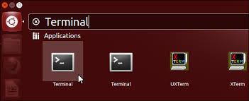
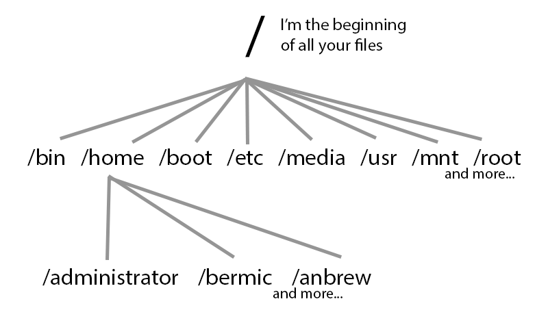
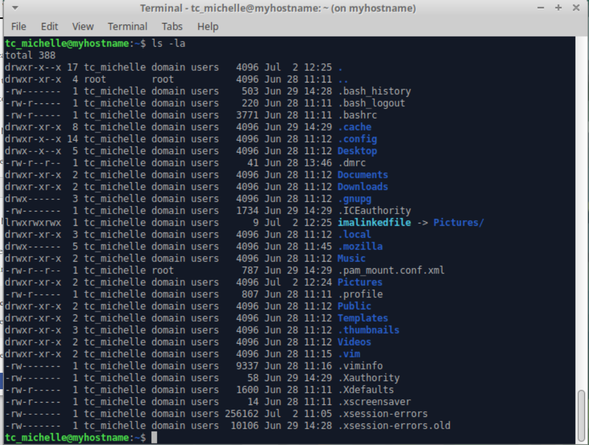
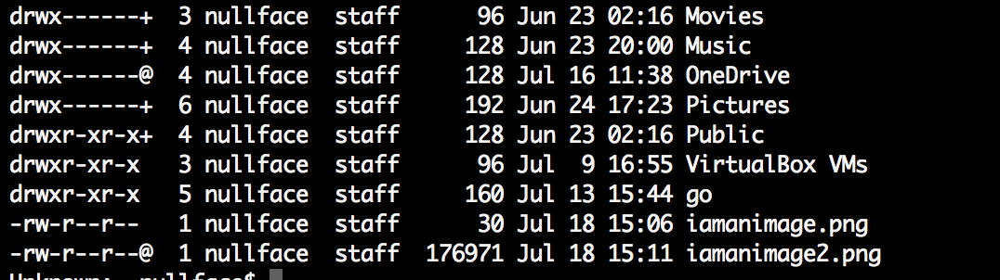
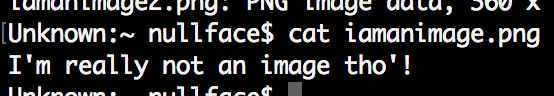

Congratulations recruit and welcome to CyberSec. As you should know we provide security services to you, our communities, and businesses. You've made it this far through our training program, I suppose that means you may be helpful. But first comes the final training. We need to strengthen your skills before you can truly be of use. Go through each tab to the left and at the end we will test what you have learned. Remember, this world is being controlled by the malicious corporations and individuals and we must learn to protect ourselves from their invasive attacks. We must protect our data. This is why you are here. To protect yourself, your company and your community. And it all starts here, at the beginning, with a terminal command.
When using your computer (Mac, Linux, Windows) you typically are using a GUI (Graphical User Interface). It's a pretty representation of how your computer works. To really get into the ‘guts' of your computer and to really learn how to control it we will learn how to use the terminal. The terminal is a texted based representation of your computer (rather than graphical). Learning to use the terminal will help you along your path to protecting your community and your self.
Why should you learn the command line?
In summation it allows you to do stuff faster than GUI and provides an amazing automation support built in.
Open up terminal for the rest of this training. Or ssh into the server for the command line experience.

Linux folders and files are arranged like an upside down tree. Where the slash / is called the root, or beginning, of all your files in the entire computer. The root is the base of the tree and as you go up it keeps splitting into branches and leaves. The leaves would be a file and the branches are folders.

The root is the beginning of your files. But you can also log in as the root user. When you do this, your home directory (where your files are typically saved) is in the folder /root. Just like if you were logged in as bermic you would typically save your files in /home/bermic
Root is important to keep protected. With root access you will have access to everything on the computer. It is best practices to disable root or use a VERY strong password. For example using numbers, letters, capitals, special symbols and a random sampling of each. No dictionary words.
What is a command? A command is something you type into your terminal to make something happen. That's a bit vague but essentially the idea. You can do a lot of things with commands. Let's get started right away and use two different commands. Let's go to your home directory.
Type each of the following. One at a time. Hitting enter after each
~$ cd / ~$ cd /root ~$ cd ~$ cd ../
The first command sends you to the root of your entire file system.
The second command sends you to the user root folder
The third command sends you to your home directory
The fourth sends you backwards (up) a level.
Now type in
~$ pwd
Hit enter, pwd is a command to print your working directory. In other words, it prints your location so you can see where you are. You should see something similar to /home/yourusername.
Type
~$ ls
Hit enter, ls lists the files and directories of where you are now.
There are parameters and options you can give a command. What if you wanted to list the permissions of a file and find hidden files? (Yes there are hidden files!)
Now type
~$ ls -la
Then hit enter.

That's a lot of info! What you see is all the files and folders in the folder you are at currently.
Sometimes commands can only be run as a super user. This is when the command sudo comes to use (superuser do). This gives unprivileged users access to privileged commands. If you try to do something and it says Permission denied, try again with sudo in front of the command.
Man Pages is short for manual pages. These are text documents with lots of information on commands. Remember the command we did for listing our files? ls! Let's find that man page.
Type
~$ man ls
and hit enter
Remember we typed ls -la? Let's learn what -l and -a is!
Type /-l and hit enter. Keep hitting n (stands for next) until you see -l highlighted to the left. This will be above –L
Long listing stands for listing the items in a row as seen in figure 2
Type /-a and hit enter. Hit n till you can't go any further. Now hit b (stands for back) until you find the entry for –a which is above –A
The man page is telling you that files that start with . like .bashrc (which are typically hidden) are now displayed
When in a man page and you need to get out, just type q
Not all files appear as they really are. Just because you see a file that says, imanimage.png does not mean that it is an image. It could be a text file or a harmful file if executed! So... how do you protect yourself? With the file command!
The command to check out what your files are is file. Check out the man page. Give it a peruse by typing in man file. What type of options are there with file? Now let's test it. Type q to get out of the man page.
There are 2 files in your Linux box. One is called iamaimage.png and the other is iamaimage2.png

Both look like images to me! But I also notice that one is a lot larger in size than the other. But how can I be sure that these files are both png's?
Type
~$ file iamanimage.png
You'll see something like, iamanimage.png: ASCII text
Now type
~$ file iamanimage2.png
You'll see something like, iamanimage2.png: PNG image data, 360 x 360, 8-bit/color RGB, non-interlaced
Now let's learn a new command, cat. cat prints out the text from a file.
Type
~$ cat iamanimage.png
You should see something like:

Case sensitivity means that HoW yoU labEL yoUR files matters. If you search for a file called hiya.docx would not be the same as finding a file, hIyA.docX.
touch is a command that ‘touches' a file. If the file exists it updates its modified date. If the file does not exist, then the file will be created with nothing in it. man touch to learn more.
echo will copy what you write to stdout (standard out). You can use this in many different ways.
Type
~$ echo "This is echoed"
You will see that it was repeated back to you!
Carrots are good for you, but I am talking about > >> < << These are called carrots. Carrots have many uses. > Will replace a file with what you input
Type
~$ echo "This is cool" > newfile ~$ cat newfile
Now type
~$ echo "This is cool too" > newfile ~$ cat newfile
You can see that > will replace any text with what you send it. While >> will append to a file
Type
~$ echo "This is another thing" >> secondfile ~$ echo "Hello World" >> secondfile ~$ cat secondfile
Now let's combine the two files.
Type
~$ echo newfile >> secondfile ~$ cat secondfile
You can see the newfile appended to the end of secondfile whereas if you cat newfile it will still only have what we added to it earlier.
vim is a program that is used to edit files, and will hopefully be your new best friend! There are different editors out there for example, nano and emac. To create a file just type
~$ vim mynewfile.txt
Or
~$ vim thisisfun
To edit a file that is already created it's the same procedure, just make sure not to misspell it or you'll create a new file with that spelling.
Once you are in vim the main key strokes to editing a file are:
i - This puts you in edit mode to type and delete text like you normally would
esc - Hitting the escape key will take you out of edit mode
:w - These keystrokes will save the file. w stands for write.
:q - These keystrokes will quit the vim program. You can also do :wq to save the file and quit right away.
dd - When NOT in edit mode this will delete an entire line
0 - zero will take you to the beginning of a line while
$ - will take you to the end of a line
:q! - Did you edit a file and don't want to commit that change? These keystrokes will exit vim and NOT save your file.
There is a LOT that vim can do but we won't list it all here. Do a search on the internet to learn more! But at the end of this lesson will be a couple more commands that you will find to be amazingly helpful! You can also check out vimtutor:
~$ vimtutor
Regular expressions are used to help you find something on your computer and can be used in programming to enhance your programs. There are a LOT of websites out there that teach you all about it but the gist is that you can use symbols like a * to mean something when parsing through text. For example the * is a wild card. Let's say I wanted to find a file with the word spekter in it. But there could be other text before and after the word spekter. So I could say search for, *spekter*. This means, search for spekter and I don't care if there is anything else before or after.
This leads us to find. find is a very helpful tool that you can use to find things on your computer. Take a moment to peruse the man page for find. (man find) Get an idea of how it is used.
An example as given earlier:
~$ find . -type f -iname *spekter*
mv is used to move a file from one location to another, or to rename a file. Type man mv to learn more.
cp is used to copy a file to a new location. Type man cp to learn more.
Less is more. The command less is used to open larger files, page by page. It allows you more tools to read a file in an organized fashion.
cowsay is probably one of the best commands... ever. Well maybe not ever but it is fun!
~$ cowsay "this is fun"
fortune gives you, well, a fortune! Go ahead give it a whirl!
~$ fortune
Piping is a new concept but stick with me on this one. When you give arguments to a command it is considered a standard in (STDIN). In other words it is data that is fed to a program/command. Whereas when you see something printed out back to you it is using standard out (STDOUT). A pipe, also recognized as | is used when you want something that is a STDOUT to then be used as the STDIN. To understand this we will use a fund example.
Remember fortune? If we just type fortune we get a fortune back. That fortune we get back is a STDOUT. But when we use cowsay we type something for the cow to say, which is STDIN. So we can use a pipe to take our fortune and have the cow say it!
~$ fortune | cowsay
There are a few more really useful commands I would like to teach you about vim.
If you want to open up multiple files at the same time you can do:
~$ vim fileone filetwo.c filethree.h filefour.cc
Or you can open up another file or create a new file while you are still in vim with:
:e anotherfile.js
:b - And you can jump from file to file with the :b keystrokes and using tab to go through which file you would like to edit next
Here at CyberSec you have been well trained recruit, now let's put your training to test! This is a real mission of the utmost importance. Complete this and you are assured a spot on our team.